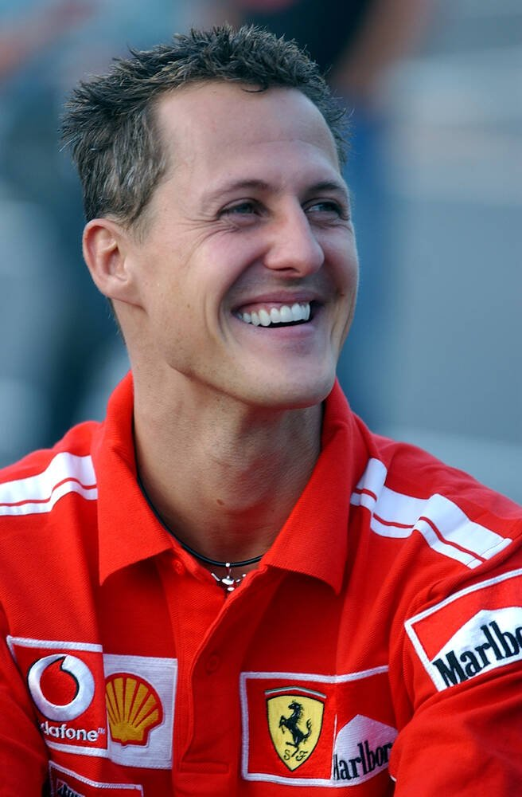
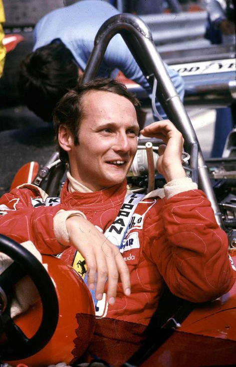
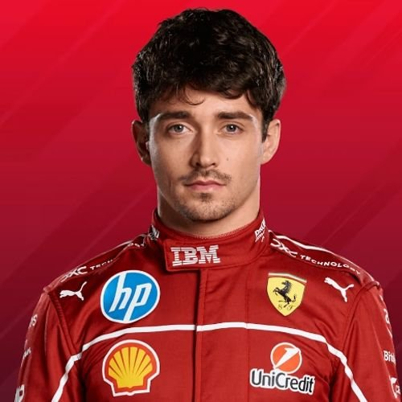
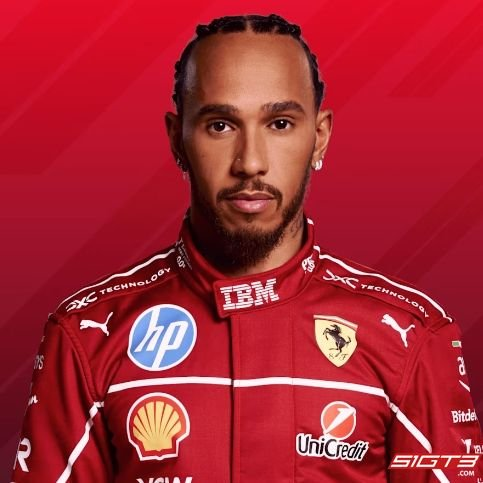

Pilóták

Michael Schumacher
1996 – 2006A történelem egyik legnagyobb F1-es pilótája. A Ferrarival 5 egymást követő világbajnoki címet szerzett 2000 és 2004 között, összesen 72 győzelmet aratva a piros autóban.

Niki Lauda
1974 – 1977Niki Lauda 1975-ben és 1977-ben nyert világbajnokságot a Ferrarival. 1976-os nürburgringi balesete és visszatérése az F1 egyik legemblematikusabb történetévé vált.

Charles Leclerc
2019 –A monacói pilóta 2019 óta vezeti a Ferrari egyik autóját. Gyors és látványos stílusával hamar a szurkolók kedvencévé vált, több pole pozíciót és győzelmet szerezve a csapatnak.

Lewis Hamilton
2025 –A 7-szeres világbajnok 2025-ben csatlakozott a Ferrarihoz, megvalósítva élete egyik legnagyobb álmát. A piros autóban való debütálása az egész F1-es világ figyelmét felkeltette.
Pilóták kvíz
1. Hány egymást követő világbajnoki címet szerzett Schumacher a Ferrarival?
2. Melyik versenyen szenvedett súlyos balesetet Niki Lauda 1976-ban?
3. Melyik évtől vezeti Charles Leclerc a Ferrari egyik autóját?
4. Hány világbajnoki címmel rendelkezik Lewis Hamilton?